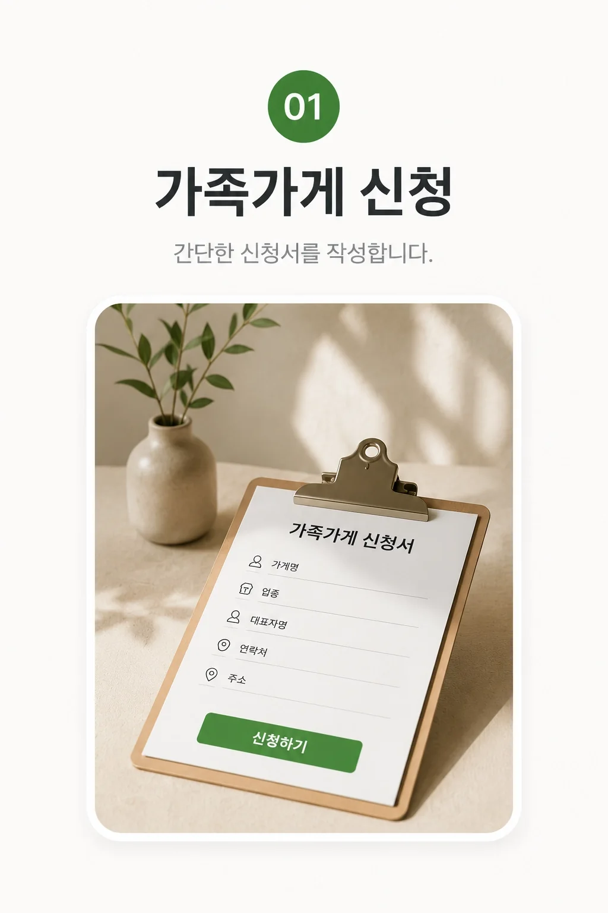
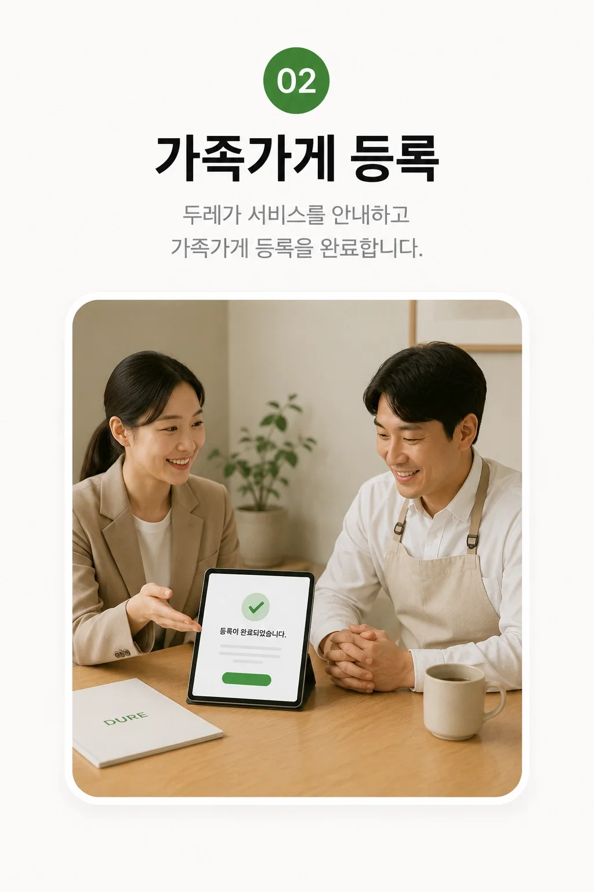
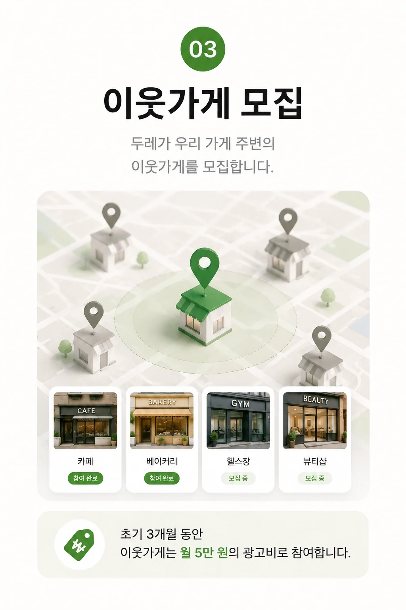
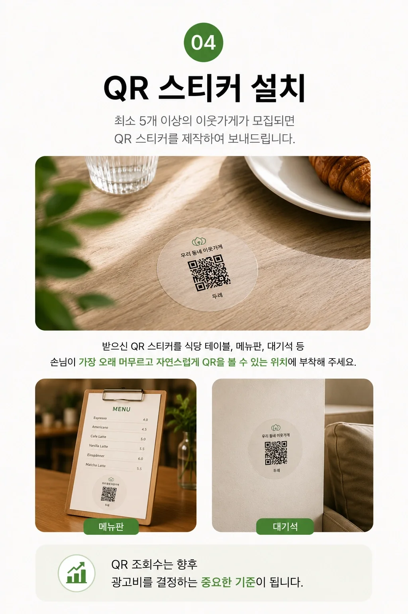
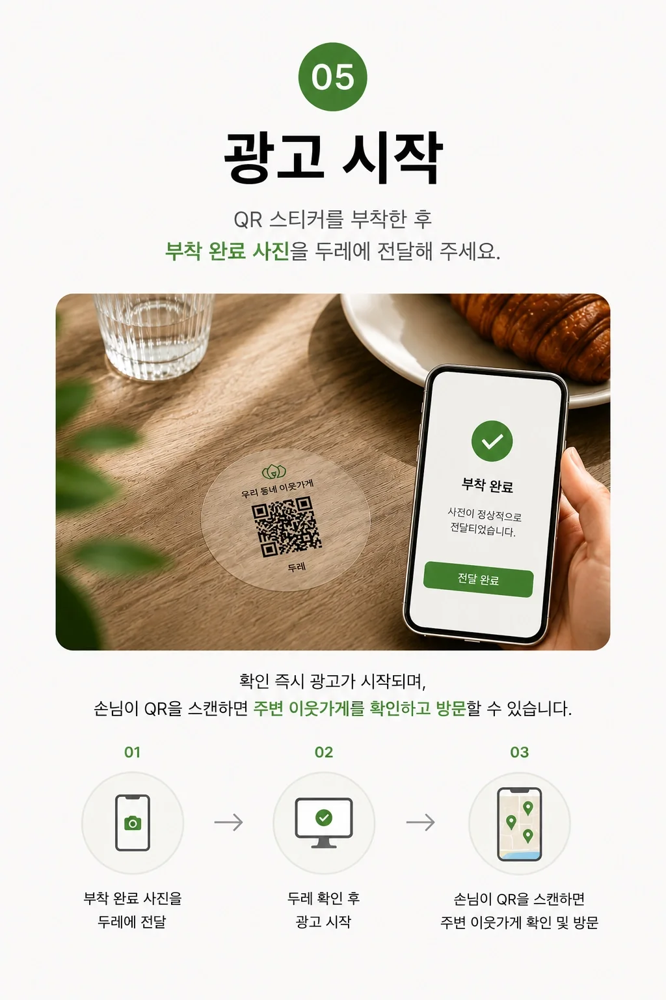
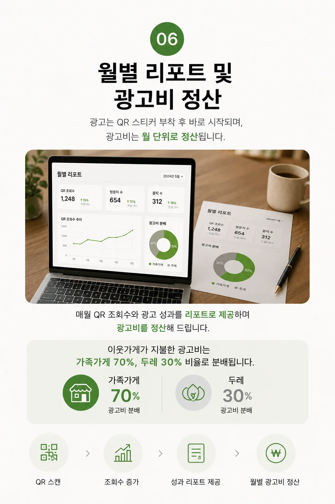
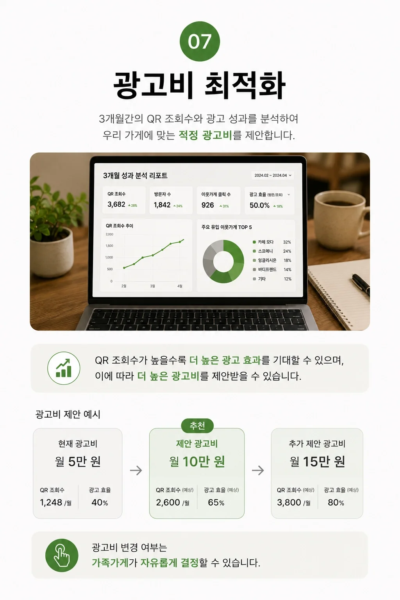

01
가족가게 신청
네이버 플레이스 링크와 기본 정보를 제출합니다.

네이버 플레이스 링크와 기본 정보를 제출합니다.

두레가 이웃가게 모집에 사용할 가족가게 소개 콘텐츠를 제작합니다.

최소 5곳의 이웃가게가 모이면 운영 준비를 시작합니다.

손님이 오래 머무는 테이블·메뉴판·대기 공간에 부착합니다.

두레가 설치 사진을 확인하면 이웃가게 소개가 시작됩니다.

월별 QR 조회수와 운영 결과를 제공하고 광고비를 정산합니다.

3개월 데이터를 분석해 적정 광고비를 제안합니다.

가족가게는 매장 운영에 집중하세요. 두레가 광고 운영에 필요한 실무를 함께 진행합니다.
네이버 플레이스 링크를 기반으로 두레가 소개 콘텐츠를 제작합니다.